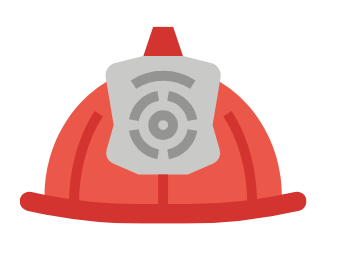

ResQ
Start
Notfalldienste
Notfallslkarte
Erste Hilfe
Suchfunktion
Impressum
Notfallskarte Wien
Suchen
⚠️ Hinweis: Bitte nach der Suche herauszoomen, um alle umliegenden Notfallstationen zu sehen!
Zeige nur Polizei
Zeige nur Krankenhäuser
 Zeige nur Feuerwehr
Zeige alle